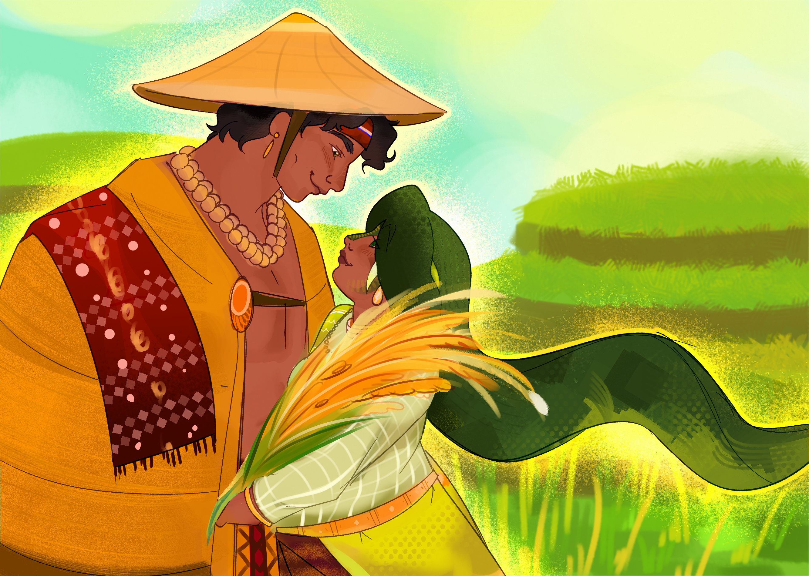
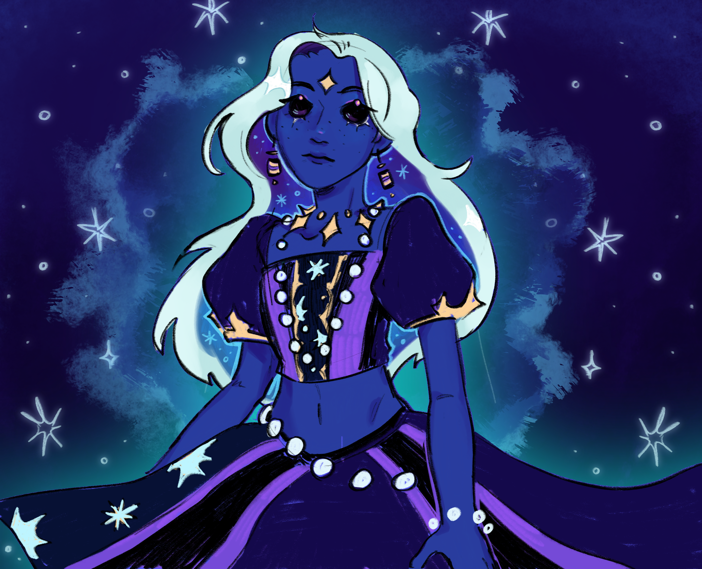
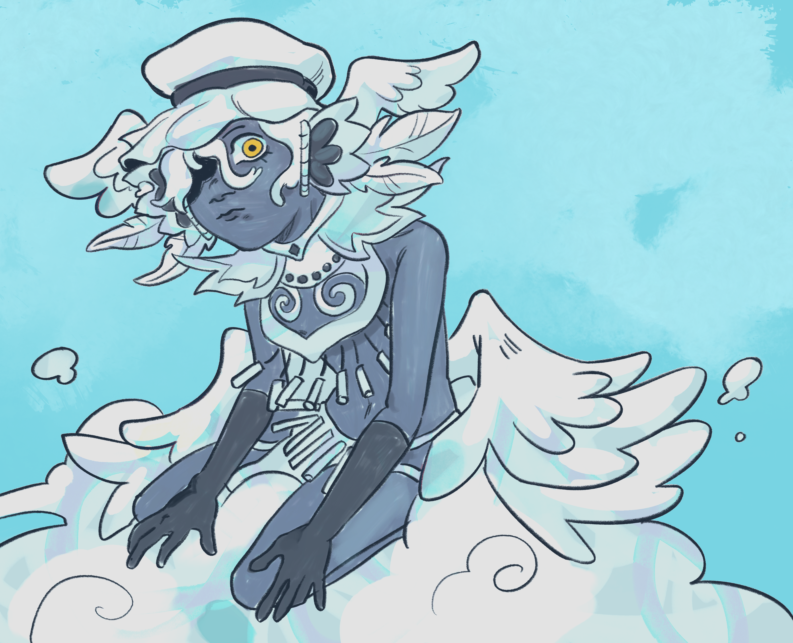
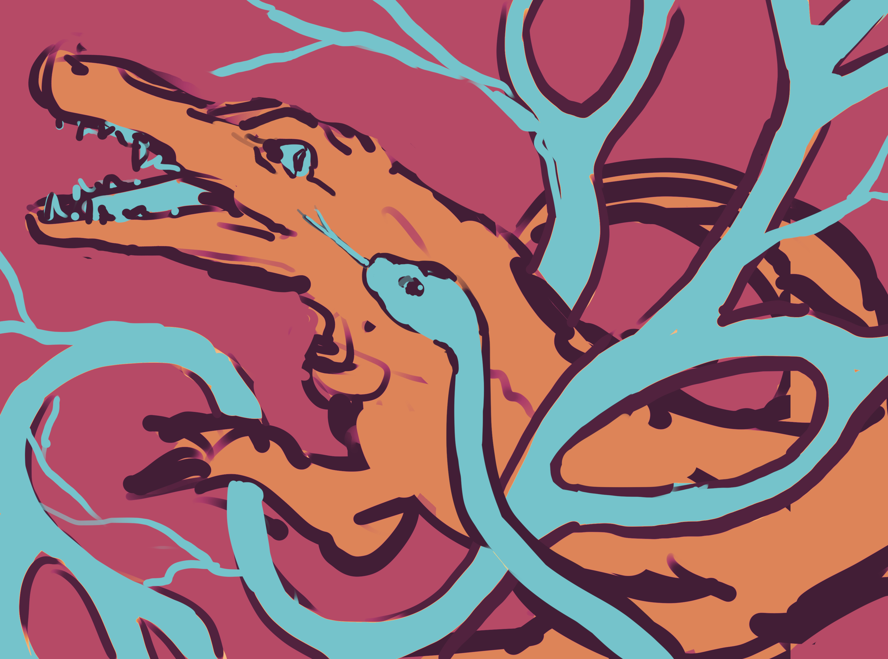

Art Gallery
Browse submitted artwork inspired by other Kapampangan myths featured on the site. A growing collection meant to celebrate and reimagine local mythos through creative expression.

The Union
Geniove Saldaña

Sa Kalwakan ni Sikluban
Clownycto

Ang Oyaying Mula sa Ulap
Clownycto

Ugat
Hapitchy